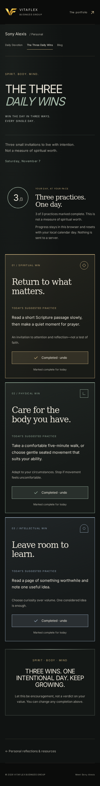

Sony Alexis — design review screenshotsPRE-RELEASE DESIGN REVIEW · HISTORICAL CAPTURES
Three experiences.
One considered visual language.
Use the separate Sony Alexis — personal experiences working preview for the actual interactions. These screenshots are real local browser captures, not generated images or fabricated publications. The approved corporate homepage is unchanged.
Publication status and verified live URLs: release report. Pre-release design notes: REVIEW.md. Routes: /sony/daily-devotion/ · /sony/three-daily-wins/ · /sony/blog/ .
Daily Devotion
Actual local Chromium captures · desktop 1440 px / mobile 390 px
The Three Daily Wins
Actual local Chromium captures · desktop 1440 px / mobile 390 px
Blog
Actual local Chromium captures · desktop 1440 px / mobile 390 px
Three wins — completed state
